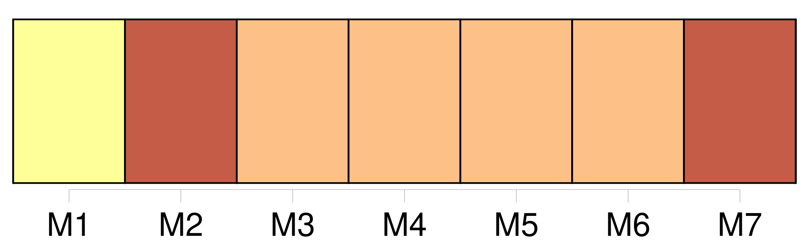

Longueur nb maillons : 12 mentions |
  |
[La troisième] au contraire, née en 1610, prolongea [sa] vie jusqu’ en 1712 ; on [l’] appelait mademoiselle d’ Escars.
En 1653, [elle] fut mariée à François de Choiseul, marquis de Praslin, fils du premier maréchal de ce nom : [elle] ne manquait ni de beauté ni d’ esprit, mais la figure qu’ [elle] fit dans le monde ainsi que [ses] deux frères, ils la devaient surtout à l’ éclat que jeta de bonne heure et à la haute renommée que garda toute sa vie leur sœur cadette Marie de Hautefort. [36 phrases] Mlle de Hautefort, Chémerault et Saint-Louis, filles de la reine ; [d’ Escars] , sœur de Mlle de Hautefort, et Beaumont venoient avec moi. [159 phrases] [Sa sœur] , Mlle d’ Escars, devint [une des filles d’ honneur de la reine] , et son jeune frère, le comte de Montignac, qui était déjà dans les cadets aux gardes, entra dans la compagnie des mousquetaires du comte de Tréville. [32 phrases] de Montignac, et [sa sœur] , Mlle l’ Escars, sans oublier celle quelle croyait sa meilleure amie, Mlle de Chémerault, que Richelieu avait aussi mise en disgrâce pour couvrir sa trahison, et qui, sous le masque du dévouement, avait accepté l’ odieuse mission de surveiller l’ exilée comme elle avait fait la favorite. [25 phrases]
De là, tant de vers adressés par Scarron à Mme de Hautefort et à [sa sœur] |

|
La ressource peut être téléchargée sur la page Ortolang
Si vous avez des questions ou vous voyez des erreurs, merci d'envoyer un mail à silvia.federzoni89@gmail.com
Site développé par S. Federzoni (contact)